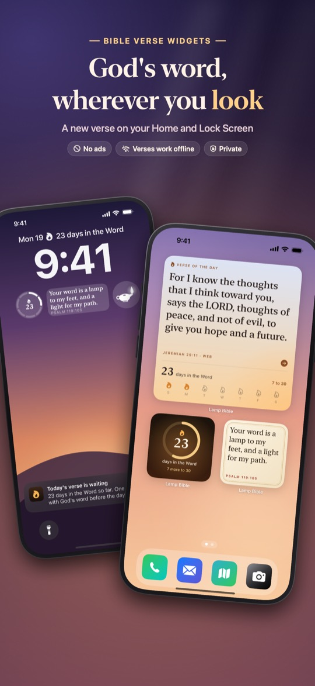
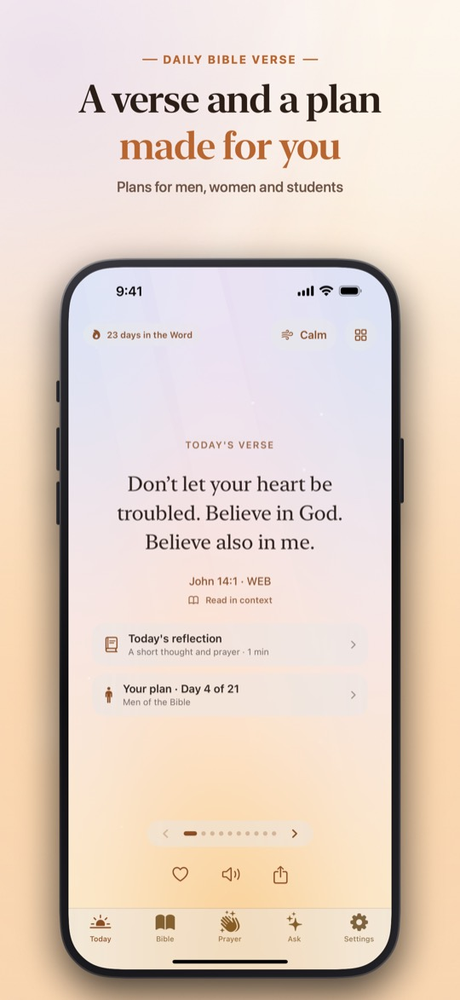
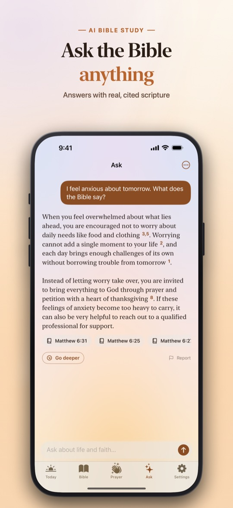
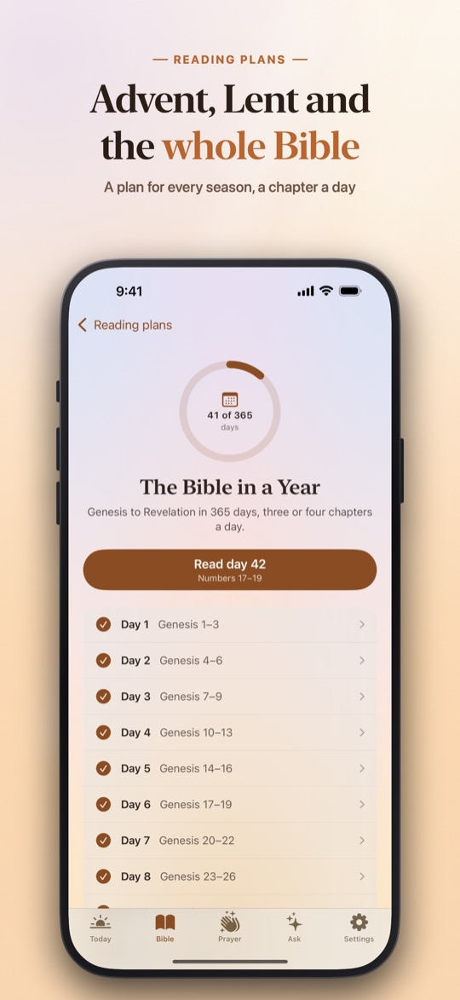
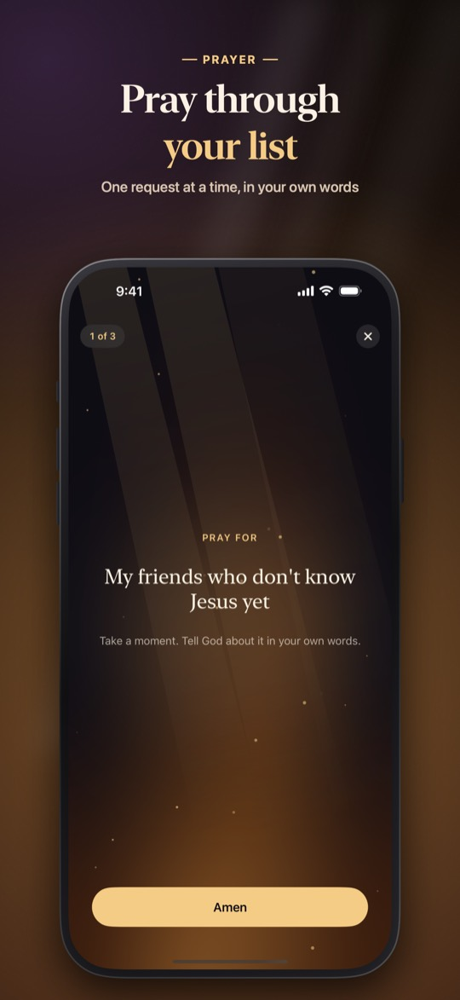

A daily Bible verse on your Lock Screen, and the whole Bible offline.
Lamp Bible is a free iPhone app for Christians who want to start each day in the Word. It puts a new verse on your Lock Screen and Home Screen every day, gives you the King James Version and the World English Bible with no internet needed, and answers your questions with real, cited scripture.





What Lamp Bible does
A verse wherever you look
- A new verse every day on Lock Screen and Home Screen widgets, in a sky that follows your day
- A short reflection and prayer with today's verse
- Gentle reminders at the times you choose, and milestones for your days in the Word
The whole Bible, offline
- King James Version and World English Bible, no internet needed
- Search any word, or jump straight to a reference like John 3:16
- Listen: the Bible read aloud, verse by verse, even with the screen locked
- Highlight, take notes, favorite and share any verse as an image or video
Reading plans
- The Bible in a Year, the New Testament, John in 21 Days, Psalms for Hard Days, Proverbs in 31 Days and more
- Seasonal plans for Advent and Lent
- One reading a day with a progress ring; a missed day never resets you
Prayer, rest and memory
- A private prayer list you pray through one request at a time, and answered prayers to look back on
- Sleep with Scripture: a psalm read softly over rain, ocean or fireplace sounds
- One minute of guided breathing with a calming verse for anxious moments
- Memory verses that fade word by word and come back just before you'd forget
Ask: answers grounded in scripture
- Ask about anxiety, grief, forgiveness, prayer or any passage
- Every answer quotes real verses, checked word for word against the Bible text
- 5 free questions a month; unlimited with Premium
Price
Lamp Bible is free to download, with the daily verse, widgets, the full Bible, audio and the prayer list free. Lamp Premium adds unlimited Ask, Sleep with Scripture, a reflection with every verse, every reading plan and all themes: $39.99 a year with a 7-day free trial, or $4.99 a week (US prices).
Privacy
No account, no ads and no tracking. Your prayers, notes, highlights and plans stay on your iPhone. Ask sends only the question you type, and only after you agree to it. Privacy Policy
Questions
Is there an app that puts a Bible verse on my iPhone Lock Screen?
Yes. Lamp Bible has Lock Screen and Home Screen widgets that show a new Bible verse every day. Add the widget once and the verse changes on its own each morning, with no internet needed.
Does Lamp Bible have the King James Version?
Yes. Lamp Bible includes the King James Version (KJV) and the World English Bible, both stored on your phone so they work offline. The Spanish edition uses the Reina-Valera 1909.
Is Lamp Bible free?
Yes. The daily verse, widgets, the full Bible, audio and the prayer list are free. Lamp Premium ($39.99 a year with a 7-day free trial, or $4.99 a week in the US) adds unlimited Ask, Sleep with Scripture, every reading plan and all themes.
Can an AI Bible app give wrong verses?
In Lamp Bible's Ask, every verse an answer cites is checked against the Bible text and replaced with the exact words before you see it, so the scripture you read is always the real text.
Does Lamp Bible work without internet?
Yes. The Bible, the daily verse, the widgets, plans and the prayer list all work offline. Only Ask needs a connection.
Is there a Bible in a Year plan?
Yes. Lamp Bible has The Bible in a Year (365 days), the New Testament, and shorter plans such as John in 21 Days and Proverbs in 31 Days.